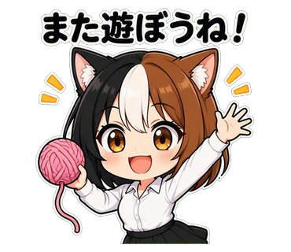

LINEスタンプ「三毛猫女子・西宮ちゃこ」
LINEスタンプ
実在の三毛猫「ちゃこ」をもとに、猫耳の女の子「西宮ちゃこ」のキャラクターを作りました。
毎日使えるあいさつや返事を中心にセリフを考え、AIで同じキャラのまま描き分けて、LINEの規格に整えました。
第1弾は初めての申請で承認され、第2弾とあわせて2セット・56点を販売しています。
画面・作品

たかぼうへのご相談はこちらから
実在の三毛猫「ちゃこ」をもとに、猫耳の女の子「西宮ちゃこ」のキャラクターを作りました。
毎日使えるあいさつや返事を中心にセリフを考え、AIで同じキャラのまま描き分けて、LINEの規格に整えました。
第1弾は初めての申請で承認され、第2弾とあわせて2セット・56点を販売しています。

たかぼうへのご相談はこちらから